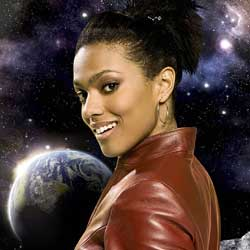

|
|
| Home The Doctors The Companions The Villains Show History |
Martha Jones Martha Jones is a fictional character played by Freema Agyeman in the long-running British science fiction television series Doctor Who and its spin-off series,Torchwood. She is a companion of the Tenth Doctor in Doctor Who, replacing Rose Tyler (Billie Piper). According to the character's creator and executive producerRussell T Davies in his non-fiction book Doctor Who: The Writer's Tale, the character was developed from the beginning with the intention of appearing for a whole of the2007 series, and to later make guest appearances in subsequent series and crossover appearances in the show's two spin-offs; Martha subsequently made guest appearances in Torchwood series two and in Doctor Who series four in 2008 and special episode The End of Time in 2010. Martha was also intended to make guest appearances in the 2009 series of Torchwood and The Sarah Jane Adventures, but could not due to the actress' other obligations.[1] Within the series' narrative, Martha begins as a medical student who becomes the Doctor's time travelling companion after an incident at the hospital where she works. After well over a year (from the perspective of the Doctor and herself) of service at the Doctor's side, Martha parts from the Doctor's company as she recognizes how unhealthy their relationship has become. After returning to life on Earth, becoming engaged and finishing her medical degree, Martha finds a newfound level of independence when she is recruited into the paranormal military organisations UNIT, and briefly Torchwood. Having faced the end of the world single-handedly during her time with the Doctor, Martha is recognised for her skills both in the field and in medicine |
Brendan Davey |
Ann Marie Skjold |
Content derived from the Doctor Who Wikipedia |